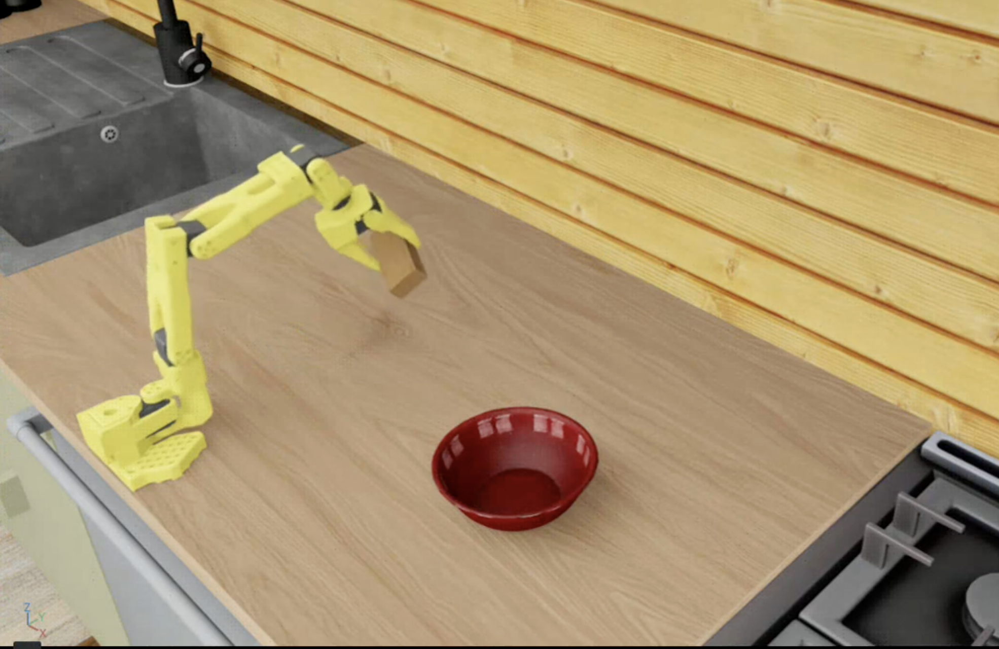

SO-101 Kitchen Simulation

Advanced simulation environment featuring the SO-101 robotic arm in a realistic kitchen setting. Leveraging USD assets, Isaac Lab, and GR00T Mimic for data augmentation and robust policy training.
Project Overview
This project demonstrates a sophisticated simulation pipeline for the SO-101 robotic arm operating in a kitchen environment. The simulation utilizes high-fidelity USD assets and state-of-the-art robotics frameworks to create realistic training scenarios for manipulation tasks.
Key Features:
- SO-101 Robot Arm: Low-cost, high-performance robotic manipulator for kitchen tasks
- USD Assets: Universal Scene Description format for high-fidelity 3D assets and physics simulation
- Kitchen Environment: Realistic kitchen simulation with interactive objects and realistic physics
- GR00T Mimic Data Augmentation: Leveraging NVIDIA's foundation model for synthetic data generation
Demo Video 1: SO-101 arm performing manipulation tasks in kitchen simulation
Demo Video 2: Additional kitchen manipulation scenarios with the SO-101 arm
Technology Stack
The simulation platform leverages cutting-edge robotics frameworks and tools for realistic physics simulation and policy learning:
Robot Platform
SO-101 robotic arm
Asset Format
USD (Universal Scene Description)
Simulation Framework
Isaac Lab
World Generation
Lightwheel
Data Augmentation
GR00T Mimic